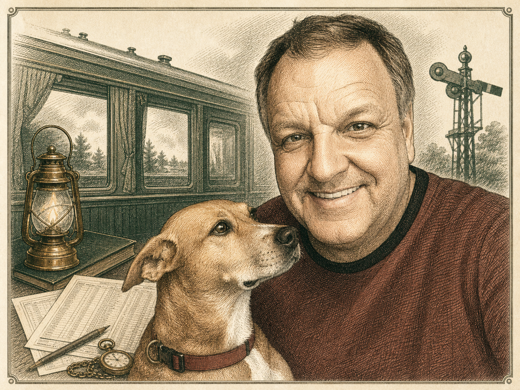

Featured Story
The Line That Points Back
A Pennsylvania railroader, a Jacksonville railroad room, and the idea that a useful train site should do what good railroad people have always done: keep the timetable honest, name the source, and get you to the right stop.
Meet this preview's first standard: source first, magic intact, and every correction welcome before the train leaves the platform.
